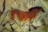
25,000 a.C. - Mesolítico
Arte rupestre en cuevas como Altamira.
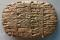
6,000 a.C. - Edad Antigua
Escritura y escultura en civilizaciones mesopotámicas y egipcias.
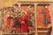
500 d.C. - Edad Media
Arte religioso, mosaicos bizantinos, pinturas cristianas.
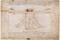
1400 - Renacimiento
Estudio anatómico, proporción, perspectiva. Leonardo, Miguel Ángel.
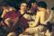
1600 - Barroco
Luz, emoción, teatralidad. Caravaggio, Rembrandt.
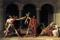
1750 - Neoclasicismo
Inspiración grecorromana. Equilibrio y razón.
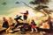
1800 - Romanticismo
Emoción, naturaleza, libertad. Goya, Delacroix.
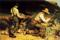
1840 - Realismo
Vida cotidiana, trabajo y denuncia social. Courbet.
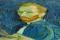
1860 - Impresionismo
Capturar la luz, color y movimiento. Monet, van Gogh.
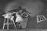
1900 - Vanguardias
Cubismo, expresionismo, dadaísmo, surrealismo.
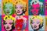
1950 - Arte Pop
Cultura de masas. Warhol, Lichtenstein.
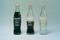
1970 - Arte Conceptual
La idea prima sobre la forma. Kosuth.
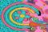
1990 - Arte Digital
Uso de computadoras, gráficos, net art.
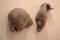
2000 - Contemporáneo
Multimedia, denuncia social, performance.

2025 - Post-Digital
Fusión físico-digital, IA, ecología, identidad.